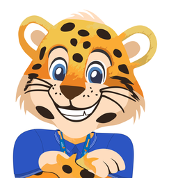

No dia do aniversário, quando o colaborador entrar no Portal, o cabeçalho mostra uma mini animação de parabéns. Ela aparece em todas as páginas, só naquele dia. A animação toca quando a página abre e depois fica quietinha, para não atrapalhar. Compare as três opções e veja também como fica no celular.
Escolheu? É só me dizer a letra da opção que você prefere.
